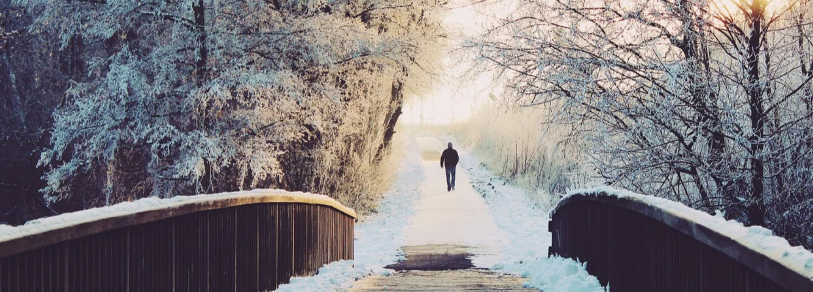
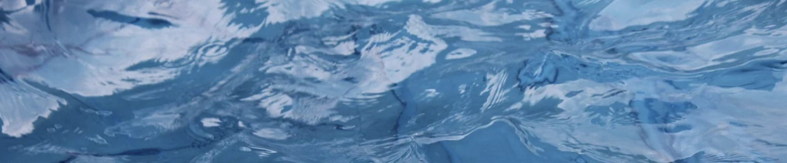

Cold Hearts and Lost Hope
for Baby Brennan, by J. Rabbit
Our hearts have become ice-cold,
Our surroundings haunt us,
All through Autumn, through Spring.
Frozen in the present–no future unfolds,
Slippery paths lure us,
Through the night, everyday.
Life, pain, cold hearts—we found love.
Hope—what is it?
Warmth, vibes, energy—where is it?
Refuse to sleep at home tonight.
We're on our own again,
Crazy city, lonely souls.
Drowning.
We'll survive—we always do.
